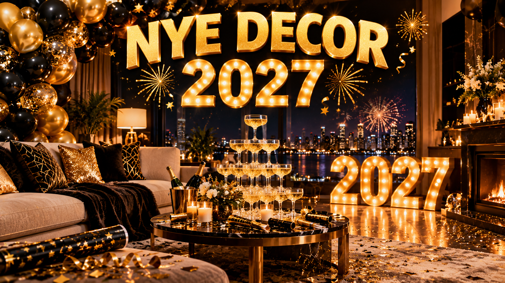

New Year Eve Party Decoration Ideas 2027
Published October 12, 2026 · Updated October 12, 2026 · By EventBuzz Team

New Year Eve is the one party of the year where the room matters as much as the guest list. Walk into a living room dressed in black and gold, with a balloon garland climbing the wall and a champagne tower catching the light, and the night already feels like an event before the first toast. The good news is that a great-looking NYE setup does not require a professional decorator. It requires a color theme chosen in advance, a few high-impact pieces placed where the camera finds them, and a plan for the midnight moment. This guide to New Year Eve party decoration ideas for 2027 walks through color themes, balloon garlands, table settings, photo backdrops, the countdown corner, budget and luxe tiers, and the cleanup plan nobody thinks about until January 1st morning.
Choose Your Color Theme First
Every strong NYE look starts with two colors, not ten. A limited palette is what makes budget decorations look intentional and expensive ones look cohesive. The four themes that work best for 2027:
- Black and gold: the undisputed classic. Black tablecloths, gold chargers, gold balloons, black backdrop. It photographs beautifully under warm light and hides wear on rented furniture. The only rule: keep gold matte or brushed, not all glitter — too much shine reads cheap on camera.
- Silver and midnight blue: cooler and more modern than black and gold. Deep navy drapes, silver mylar balloons, white fairy lights. This theme suits apartments with cool-toned lighting and looks stunning against a city-view window.
- Champagne and blush: soft, elegant, and less common, which makes it memorable. Ivory table runners, blush balloons with a few gold accents, candlelight. Works especially well for dinner-party-style NYEs rather than dance-floor ones.
- Emerald and gold: rich and festive without copying Christmas. Deep green velvet ribbons, gold candle holders, dark green balloons. A good pick if your tree is still up and you want continuity with the holidays.
Once the theme is chosen, buy or rent everything in those two colors only. Stray colors are the number one reason party rooms look cluttered. If kids are coming, add a third accent color in exactly one place — a small kids’ corner — and nowhere else.
Balloon Garlands That Actually Look Good
A balloon garland is the single highest-impact decoration per dollar, and it is also the one most people get wrong. The secret is the organic shape: mix three to four sizes (5-inch, 11-inch, 18-inch, and 24-inch) in your theme colors, cluster them in groups of four or five, and attach clusters to a balloon tape strip or a length of fishing line. An 8-to-10-foot garland needs roughly 60 to 80 balloons, which takes one person about 90 minutes with an electric pump. Hand-pumping that many balloons is how people run out of energy before the party starts — borrow or buy the $15 pump.
Placement matters more than size. The garland earns its place in exactly three spots: framing a doorway guests walk through, arching over the dessert or drinks table, or wrapping one corner of the photo backdrop. A garland on every wall is overkill. For a luxe touch, double-stuff balloons — a gold balloon inside a clear one — for depth, and tuck in a few metallic star or number balloons (2-0-2-7) at irregular intervals rather than in a neat row. Fill the garland on the morning of the 31st; latex balloons start deflating after about 12 hours, and mylar numbers hold for days, so inflate those first.
Table Settings: The Centerpiece of the Party
Guests spend more time at the table than anywhere else, so this is where money shows. Start with a floor-length tablecloth in your dark theme color — black or navy hides stains and instantly formalizes a folding table. Layer a runner down the center in your accent color, then build height in the middle: a low row of LED candles (real flames and crowds do not mix), a few bud vases with a single stem each, and scattered metallic confetti or gold stars.
The place setting formula that photographs well: charger plate in gold or silver, dinner plate on top, a folded napkin with a sprig of eucalyptus or a single star pick, and the champagne flute slightly to the right of the water glass. Name cards are optional for casual parties but add a finished feel for sit-down dinners — handwritten on black card stock with a gold pen costs almost nothing.
The showpiece for 2027: a champagne tower. You do not need 50 coupes; a small tower of 15 to 20 coupe glasses on a mirrored tray reads as pure luxury. Build it before guests arrive on a stable, level surface away from foot traffic, pour slowly from the top coupe, and keep a towel underneath. If alcohol is not the vibe, build the same tower with sparkling cider or ginger ale — the visual effect is identical.
The Photo Backdrop Wall
Every NYE party in 2027 needs a designated photo spot, because otherwise guests take pictures against your kitchen cabinets. Dedicate one wall — at least 8 feet wide — and build it in layers. The base layer is the backdrop itself: a shimmer sequin wall panel (rentable for about $30–50), a curtain of metallic fringe strips, or simply a black bedsheet with fairy lights pinned in a grid. The second layer is the garland corner from your balloon plan, wrapping one side. The third layer is props on a small side table: 2027 glasses, feather boas in theme colors, a chalkboard or lightbox with the year, and silly signs.
Lighting makes or breaks the backdrop. Turn off the overhead light nearest the wall and place a warm floor lamp or two LED panels at 45-degree angles so faces are lit without harsh shadows. Test it with your phone camera before the party: if the backdrop looks dark behind people, add one more string of lights. A photo backdrop that is ready when the first guest arrives gets used all night; one assembled at 11 PM gets ignored.
The Countdown Corner
The midnight moment deserves its own zone. Set up a small side table or shelf as the countdown corner: a large clock or a tablet showing a countdown timer, a basket of confetti poppers (one per guest, plus spares), party horns, and the 2027 number balloons. Hang a simple "Happy New Year 2027" banner above it. Ten minutes before midnight, this corner becomes the natural gathering point — the host hands out poppers, someone starts the countdown on the TV or speaker, and nobody is scrambling for supplies at 11:58 PM.
For the countdown itself, queue a ball-drop stream or a New Year countdown video on the biggest screen in the house, with the sound routed through your best speaker. If your crowd is the dancing type, plan the music transition in advance: the last song of 2026 should end around 11:55 PM, the countdown track plays, and the first song of 2027 starts within seconds of midnight. That five-minute window sets the energy for the entire new year.
Budget vs Luxe: Two Shopping Tiers
A great-looking NYE party does not require a great big budget — it requires spending in the right places. Here is how the two tiers break down for a party of 15 to 20 guests:
- Budget tier ($40–80): dollar-store balloon packs and one mylar 2027 set, a black plastic tablecloth with a gold paper runner, LED tea lights in bulk, a fringe curtain backdrop, printed "Happy New Year" banner, confetti poppers multipack. Spend the real money on the electric pump and good lighting — warm white string lights transform cheap decor.
- Luxe tier ($200–400): double-stuffed organic garland with 24-inch statement balloons, rented sequin wall or velvet drapes, real chargers and cloth napkins, mirrored trays, a coupe tower set, fresh eucalyptus and roses, professional-style LED panels for the photo wall, premium confetti cannons.
The hybrid sweet spot most hosts land on: budget on the table (guests barely notice plates), luxe on the backdrop and lighting (every photo shows them). Rent what you will use once — sequin walls, drapes, chargers — and buy what stores well for next year, like LED candles, string lights, and the pump.
Cleanup Tips for January 1st Morning
The party ends; the mess does not. Future-you will be grateful for thirty minutes of prep done before the first guest arrives. Place a labeled trash bag and a recycling bag in every room — not hidden in the kitchen, but visible where the mess happens. Put a plastic tub or tray by the door for coats and one in the bathroom for anything guests leave behind. Cover the floor under the drinks table with a cheap plastic sheet; champagne spills happen.
Cleanup order matters: first, gather all food into the fridge and bag the trash so nothing sits overnight. Second, deflate and bag balloons (pop the latex ones outside or in a closed bag — the noise at 2 AM is not worth it). Third, stack dishes to soak rather than washing them at midnight. Leave the backdrop and garland up until the next day; photograph the room before you tear it down, both for memories and as a reference for next year’s shopping list. Save every reusable piece — lights, pump, chargers, banner letters — in one labeled box marked "NYE 2027" so 2028 starts from a head start.
Decorate for the camera, not just the room. If the backdrop, the table, and the countdown corner look great in photos, the whole party looks great — because that is how everyone will remember it.
Frequently Asked Questions
When should I start decorating for New Year Eve?
Do the shopping a week ahead, inflate mylar numbers and build the backdrop on December 30th, and fill latex balloon garlands on the morning of the 31st. Latex starts deflating after about 12 hours, so same-day inflation keeps everything full for midnight.
How many balloons do I need for a garland?
An 8-to-10-foot organic garland needs roughly 60 to 80 balloons in mixed sizes (5, 11, 18 and 24 inch). Buy about 20 percent extra — a few will pop during assembly, and spares let you fill thin spots.
Black and gold or silver and blue — which is better?
Black and gold is the classic: warm, forgiving, and photogenic under warm light. Silver and midnight blue looks more modern and suits cool-toned rooms. Pick whichever matches your existing furniture and lighting, and commit to just the two colors.
How do I hang a backdrop without damaging the walls?
Use removable adhesive hooks and painter's tape — never nails or staples in a rental. Hang a tension rod in a doorway for curtains, or lean a large backdrop frame against the wall. Test one hook first; sequin panels are heavier than they look.
What is a realistic decor budget for 20 guests?
A polished look runs $40–80 using dollar-store basics plus good lighting, or $200–400 for a luxe setup with rented pieces and fresh flowers. Most hosts land in between: budget on the table, luxe on the backdrop and lighting where the photos happen.
How do I build a champagne tower safely?
Use 15 to 20 coupe glasses on a mirrored tray, on a stable level surface away from foot traffic. Build the pyramid before guests arrive, pour slowly from the top coupe, and keep a towel underneath. Sparkling cider gives the same visual effect for non-drinkers.
Conclusion
A memorable New Year Eve room comes down to three decisions made early: one color theme, one statement piece per zone, and a countdown corner ready before 11 PM. Balloons, a styled table, a photo backdrop, and a plan for midnight cover everything guests actually notice — and everything their photos will show. Do the prep on the 30th, inflate on the morning of the 31st, and when the clock hits midnight on Thursday, December 31st, you will be holding a confetti popper instead of a roll of tape.
More from EventBuzz:
Happy New Year 2027 — may your midnight be golden!
New Year Party Picks
Party supplies and decorations to ring in 2027 in style.


Prices shown at the time of publishing and can change. Links take you to AliExpress, where shipping and delivery details are shown.